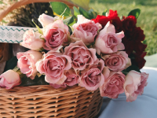
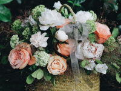

25-60-60")
Цветочные корзины
Цветочные корзины — это идеальный подарок, который сочетает в себе практичность и роскошь. В Julia's Flowers мы создаём изысканные корзины, наполненные свежими и стабилизированными цветами, которые подойдут для любого случая: от юбилеев и свадеб до поздравлений с важными событиями или просто для того, чтобы выразить благодарность и внимание близким людям.
 
Цветочные корзины — это не просто подарок, это настоящий символ эмоций, который будет оценён по достоинству. Каждая корзина создаётся с душой и вниманием к деталям. Мы тщательно подбираем цветы, чтобы композиция была гармоничной, элегантной и стильной. От нежных роз и лилий до экзотических орхидей и ярких тюльпанов — мы учитываем ваши предпочтения, создавая композиции, которые подойдут для любой ситуации.
Мы также украшаем корзины декоративными элементами, такими как атласные ленты, зелень, сухоцветы и даже маленькие фигурки, чтобы придать подарку особую атмосферу. Такие корзины могут быть как сдержанными и классическими, так и яркими и экстравагантными, в зависимости от того, какой эффект вы хотите произвести. Каждая корзина становится не только элементом декора, но и произведением флористического искусства, которое принесёт радость и долгую память.
Цветочные корзины также могут стать отличным дополнением для украшения интерьера. Если вы хотите создать атмосферу уюта и тепла в вашем доме или офисе, такие композиции идеально подойдут для любых пространств — от маленьких столиков до крупных залов. Мы с радостью поможем вам выбрать корзину, которая станет настоящим украшением вашего праздника или интерьера.
Цветочные корзины — это подарки, которые всегда актуальны и никогда не выходят из моды. Подарив такую корзину, вы дарите не только красоту и аромат, но и настоящую заботу, внимание и любовь.
Перейти на главную страницу